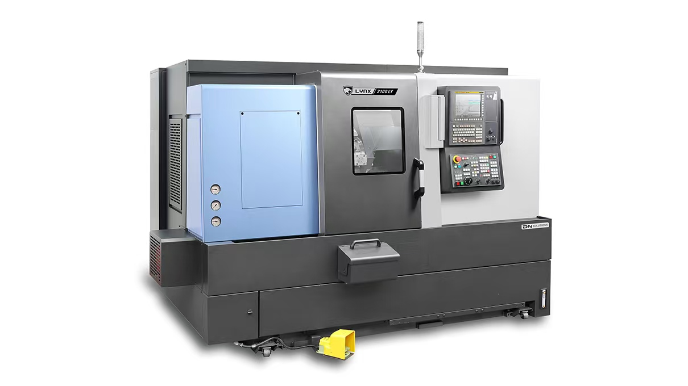
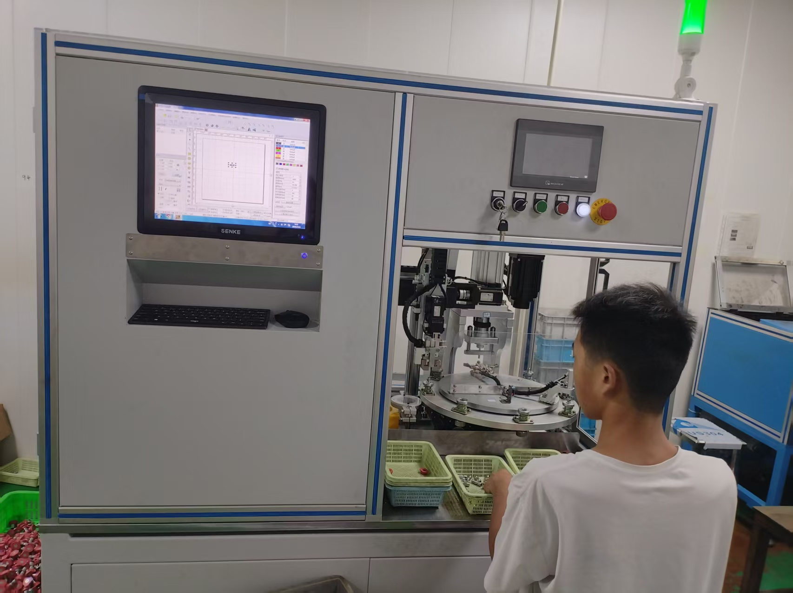

KEY EQUIPMENT 核心设备
主力加工装备
从走心机到车铣复合,从凸轮机到自动化组装,构建全工艺链加工能力。

STAR · 日本
STAR SB-20R 走心机
- 主轴最高转速 10000 r/min
- 背轴/动力头最高转速 8000 r/min
- 最多刀具 26 PCS
- 最大加工直径 Φ20.0mm
- 最高精度 0.002mm,配端铣侧铣

斗山 · 韩国
斗山 2100LY 车铣复合
- 法兰/轴承座/圆盘类最大直径 380mm
- 轴类零件长度最长 610mm
- 带铣面/键槽/端面孔/径向孔
- 适合复杂零件一次成型
- 禾隆走刀机配套加工

自动化设备
凸轮机 / 自动机床
- 铜、铝、铁、塑料等精密零件
- 仪表、钟表、汽车、摩托零件
- 眼镜、五金卫浴、电子接插件
- 电脑、手机、机电、军工行业
- 适合小零件大批量加工

自动化装配
自动化组装机
- 喷嘴自动组装机
- 铣面机 / 无心磨 MT1040A
- 攻牙机 ZS4112 / 滚牙机 TB-3T
- 试水机全检装配质量
- 数控外圆磨 MK